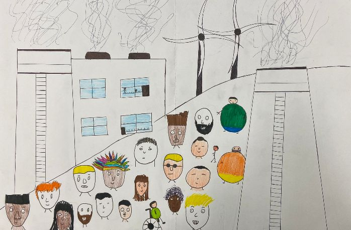

Reli a matéria com base na notícia do G1, que indica que menos de 10% dos colaboradores da empresa fazem parte de um grupo considerado minoritário, como pessoas com deficiência (PCDs), por causa de as falsidades dos proprietários da empresa. , quando negaram ter qualquer filtro, mas na verdade deixaram que seus preconceitos afetassem o processo de contratação para contratos, então no meu cartoon eu retratei os filtros que algumas empresas distribuem, mas não admitem.
